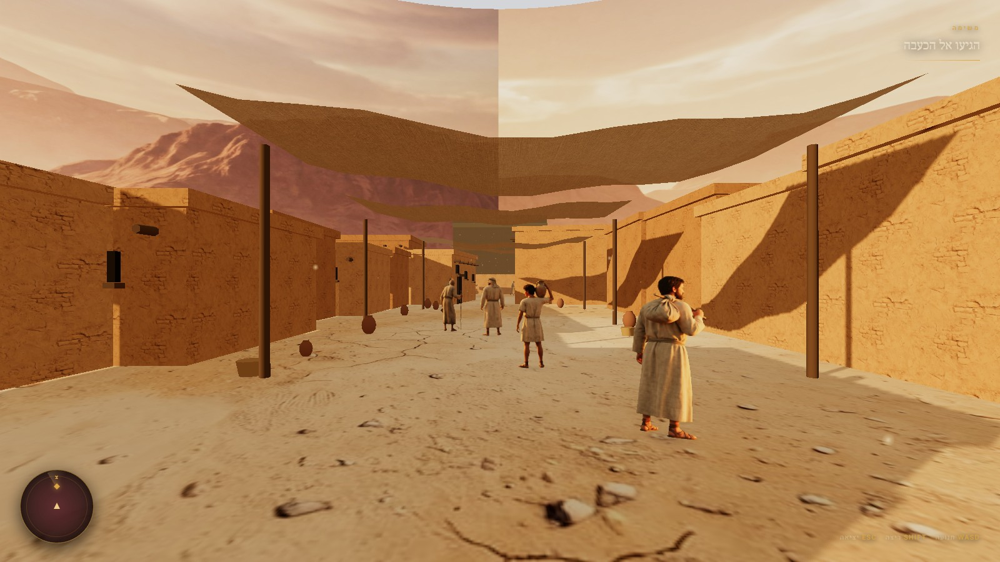
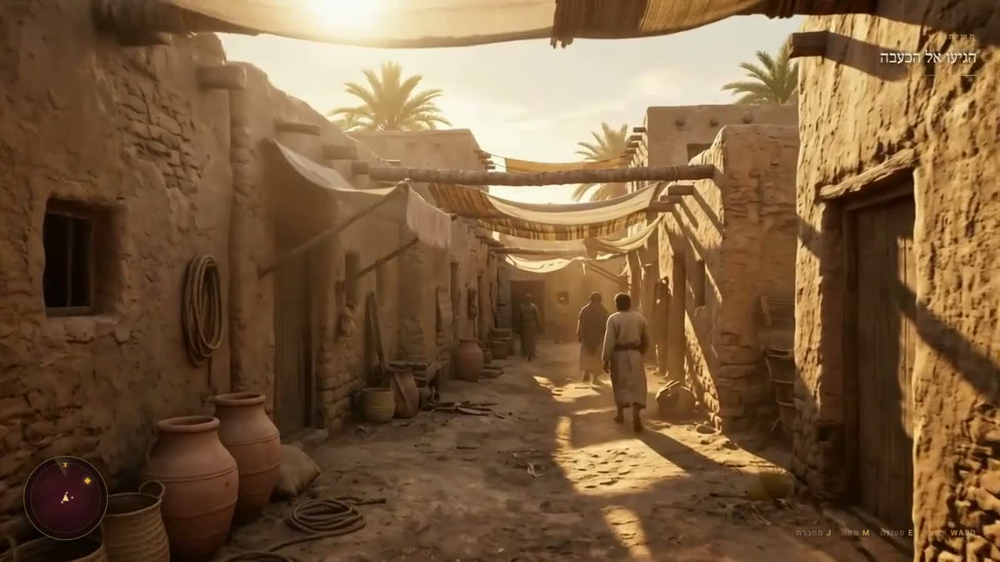
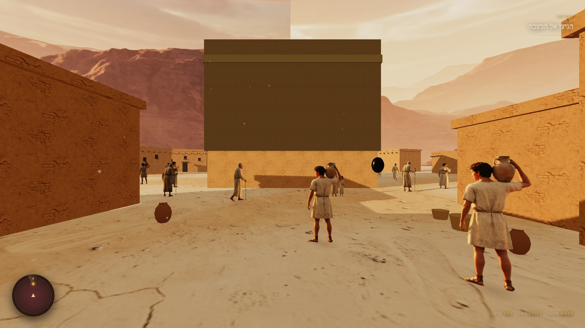
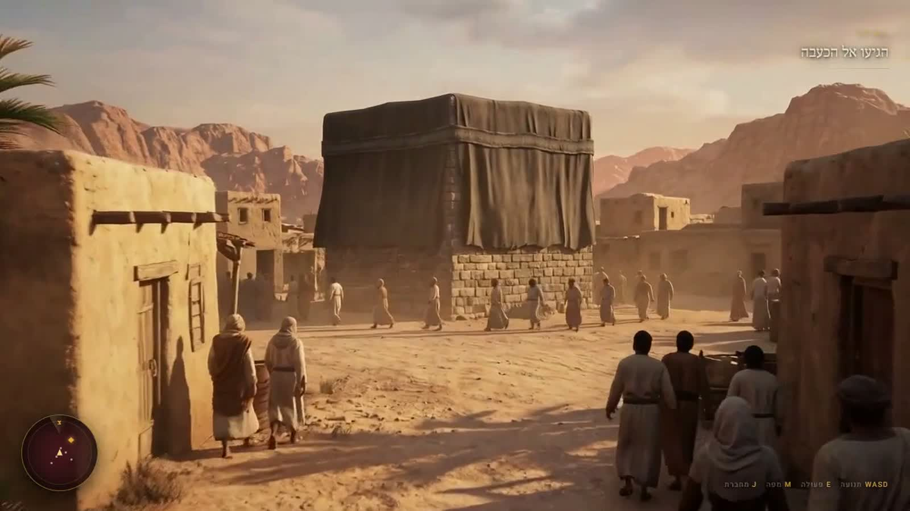

משמאל — פריים מסרטון הקונספט, שנוצר במודל וידאו קולנועי. מימין — צילום מסך מסצנה שרצה בזמן אמת בדפדפן, עם WASD, עכבר ו־HUD. גררו את המחוון.


גררו ימינה ושמאלה כדי להשוות


גררו ימינה ושמאלה כדי להשוות
| מרכיב | הגיע? | למה |
|---|---|---|
| חומר הקירות | כן | אותה טקסטורה שנוצרה ב־AI, בקנה מידה עולמי |
| אור שעת זהב וצללים ארוכים | כן | שמש נמוכה + אור חצי־כדור שממלא את הצללים בחום |
| קרקע, אבק, אובך | כן | ערפל אקספוננציאלי + חלקיקים |
| הרים ושמיים | כן | הפנורמה מצוירת על גליל — לא גיאומטריה |
| אנשים במרחק | כן | לוחות שפונים למצלמה, מתוך גיליון שנוצר ב־AI |
| אנשים מקרוב | לא | לוח שטוח נשבר בקלוז־אפ — צריך מודל אמיתי |
| בד שמתנופף | לא | הסוככים קשיחים; דורש סימולציית בד |
| עומק ופרטי־פרטים | חלקית | אין AO, אין תאורה אפויה — עוד לא |
זה מגיע לבערך 65–70% מהמראה של הסרטון — בערך מה שהערכתי, ובלי אף טריק שלא יעבוד גם על מחשב בית ספר.
הפער הגדול ביותר הוא עושר: לסרטון יש אלפי פרטים קטנים בכל פריים. אבל שלושה דברים שעוד לא נעשו סוגרים חלק גדול ממנו — תאורה אפויה (הכי משמעותי), AO, ועוד נכסים קטנים על הקרקע.
הכעבה עדיין קוראת כמלבן כהה ולא כבד. הסוככים נראים כמו לוחות ולא כאריג. הכדים לא יושבים על הקרקע בצורה משכנעת. ומספר הבתים עדיין קטן מכדי שהעיר תרגיש צפופה.
אלה פגמי כיוונון ונכסים, לא פגמי גישה. אף אחד מהם לא דורש מנוע אחר.
זו לא תמונה. זו סצנה שרצה, עם הליכה חופשית והסתכלות. פותחים, לוחצים, ומהלכים ב־WASD.
רץ ישירות מהדיסק — אין צורך בשרת ואין תלות באינטרנט חוץ מהגופנים. הכל שוקל 4.7MB.
להיכנס לרחוב לצפות בסרטון